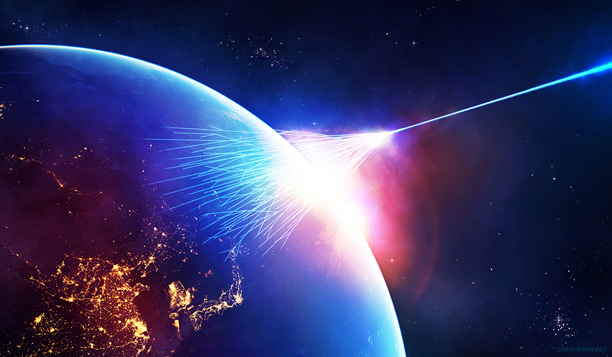

A mission to study cosmic rays
Unveiling the Invisible Particles of Space
Cosmic rays are high-energy particles—mostly protons and alpha particles—that constantly bombard Earth from deep space. Though invisible to the naked eye, they carry vital clues about the most energetic and violent phenomena in the cosmos.
The Ionic Mission by CAPIBARA is designed to detect and study these particles from low Earth orbit. Our student-built satellite features a layered particle detector that measures the time-of-flight, charge, and energy of each incoming cosmic ray, enabling us to fully characterize their properties.
This mission will focus on the goal of exploring the ionic high-energy Universe by detecting cosmic rays.
This satellite will feature a particle detector, capable of detecting protons and alpha particles. Using a layered structure of detectors, it captures time-of-flight and charge information for a comprehensive detection.
🧪 Time-of-Flight Detectors Scintillators detect particle speed by flashing light when struck by cosmic rays. Timing the flashes between layers reveals the particle's velocity.
⚡ Charge Detection (Silicon Detectors)These detectors act like tiny ion chambers, identifying the charge of each particle by measuring ionization.
This layered arrangement enables the satellite’s PCR detector to capture critical data on cosmic ray particles with high accuracy, contributing valuable insights into their composition and behavior.
| Orbit | LEO/SSO |
| Altitude | ~500 km |
| Inclination | 50-60º |
* these are preliminary parameters, and will ultimatelly follow the decisions by OBA FARADAY and the Miura 5 Spark Program teams.
Cosmic rays could help us understand the origins of supernovae, black holes, and even dark matter. With this mission, we take a leap forward in space weather forecasting, particle astrophysics, and science education — all while showing what students are capable of in real space research.